Web Server Statistics for ap.ikt.khk.ee
Web Server Statistics for ap.ikt.khk.ee
Program started on Thu, Jan 11 2018 at 2:15 PM.
Analyzed requests from Mon, Sep 11 2017 at 10:36 AM to Thu, Jan 11 2018 at 11:38 AM (122.04 days).
Web Server Statistics for ap.ikt.khk.eeProgram started on Thu, Jan 11 2018 at 2:15 PM.
Analyzed requests from Mon, Sep 11 2017 at 10:36 AM to Thu, Jan 11 2018 at 11:38 AM (122.04 days).
(Go To: Top | General Summary | Monthly Report | Daily Summary | Hourly Summary | Domain Report | Organization Report | Redirected Referrer Report | Failed Referrer Report | Referring Site Report | Browser Report | Browser Summary | Operating System Report | Status Code Report | File Size Report | File Type Report | Directory Report | Request Report)
Figures in parentheses refer to the 7-day period ending Jan 11 2018 at 2:15 PM.
Successful requests: 9,941 (1,108)
Average successful requests per day: 81 (158)
Successful requests for pages: 117 (51)
Failed requests: 262 (10)
Redirected requests: 71 (0)
Distinct files requested: 517 (542)
Distinct hosts served: 10 (10)
Data transferred: 217.18 megabytes (23.42 megabytes)
Average data transferred per day: 1.78 megabytes (3.35 megabytes)
(Go To: Top | General Summary | Monthly Report | Daily Summary | Hourly Summary | Domain Report | Organization Report | Redirected Referrer Report | Failed Referrer Report | Referring Site Report | Browser Report | Browser Summary | Operating System Report | Status Code Report | File Size Report | File Type Report | Directory Report | Request Report)
Each unit ( ) represents 2 requests for pages or part thereof.
) represents 2 requests for pages or part thereof.
| month | #reqs | #pages | |
|---|---|---|---|
| Sep 2017 | 15 | 14 |   |
| Oct 2017 | 0 | 0 | |
| Nov 2017 | 378 | 17 |  |
| Dec 2017 | 8440 | 35 |  |
| Jan 2018 | 1108 | 51 | |
Busiest month: Jan 2018 (51 requests for pages).
(Go To: Top | General Summary | Monthly Report | Daily Summary | Hourly Summary | Domain Report | Organization Report | Redirected Referrer Report | Failed Referrer Report | Referring Site Report | Browser Report | Browser Summary | Operating System Report | Status Code Report | File Size Report | File Type Report | Directory Report | Request Report)
Each unit () represents 1 request for a page.
| day | #reqs | #pages | |
|---|---|---|---|
| Sun | 6 | 3 | |
| Mon | 463 | 41 |  |
| Tue | 472 | 4 | |
| Wed | 2543 | 35 | |
| Thu | 81 | 0 | |
| Fri | 5928 | 1 | |
| Sat | 448 | 33 | |
(Go To: Top | General Summary | Monthly Report | Daily Summary | Hourly Summary | Domain Report | Organization Report | Redirected Referrer Report | Failed Referrer Report | Referring Site Report | Browser Report | Browser Summary | Operating System Report | Status Code Report | File Size Report | File Type Report | Directory Report | Request Report)
Each unit () represents 1 request for a page.
| hour | #reqs | #pages | |
|---|---|---|---|
| 0 | 0 | 0 | |
| 1 | 1 | 1 | |
| 2 | 0 | 0 | |
| 3 | 0 | 0 | |
| 4 | 0 | 0 | |
| 5 | 0 | 0 | |
| 6 | 0 | 0 | |
| 7 | 0 | 0 | |
| 8 | 412 | 11 | |
| 9 | 1980 | 20 | |
| 10 | 359 | 16 | |
| 11 | 3895 | 1 | |
| 12 | 2366 | 7 | |
| 13 | 159 | 7 | |
| 14 | 227 | 17 | |
| 15 | 88 | 0 | |
| 16 | 124 | 4 | |
| 17 | 3 | 0 | |
| 18 | 2 | 2 | |
| 19 | 0 | 0 | |
| 20 | 150 | 6 | |
| 21 | 168 | 25 | |
| 22 | 0 | 0 | |
| 23 | 7 | 0 |
(Go To: Top | General Summary | Monthly Report | Daily Summary | Hourly Summary | Domain Report | Organization Report | Redirected Referrer Report | Failed Referrer Report | Referring Site Report | Browser Report | Browser Summary | Operating System Report | Status Code Report | File Size Report | File Type Report | Directory Report | Request Report)
Listing domains, sorted by the amount of traffic.
| #reqs | %bytes | domain |
|---|---|---|
| 9941 | 100% | [unresolved numerical addresses] |
(Go To: Top | General Summary | Monthly Report | Daily Summary | Hourly Summary | Domain Report | Organization Report | Redirected Referrer Report | Failed Referrer Report | Referring Site Report | Browser Report | Browser Summary | Operating System Report | Status Code Report | File Size Report | File Type Report | Directory Report | Request Report)
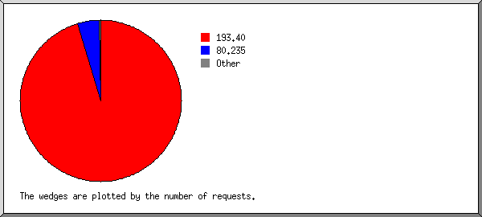
Listing organizations, sorted by the number of requests.
| #reqs | %bytes | organization |
|---|---|---|
| 9487 | 92.58% | 193.40 |
| 438 | 6.84% | 80.235 |
| 7 | 0.40% | 90 |
| 3 | 0.08% | 45 |
| 2 | 0.05% | 177.34 |
| 2 | 0.05% | 185.36 |
| 1 | 196.196 | |
| 1 | 159.89 |
(Go To: Top | General Summary | Monthly Report | Daily Summary | Hourly Summary | Domain Report | Organization Report | Redirected Referrer Report | Failed Referrer Report | Referring Site Report | Browser Report | Browser Summary | Operating System Report | Status Code Report | File Size Report | File Type Report | Directory Report | Request Report)
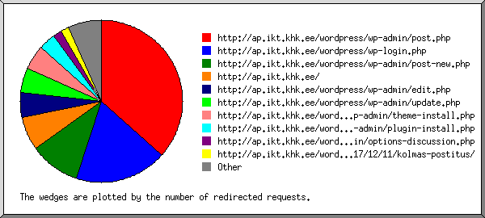
Listing referring URLs, sorted by the number of redirected requests.
(Go To: Top | General Summary | Monthly Report | Daily Summary | Hourly Summary | Domain Report | Organization Report | Redirected Referrer Report | Failed Referrer Report | Referring Site Report | Browser Report | Browser Summary | Operating System Report | Status Code Report | File Size Report | File Type Report | Directory Report | Request Report)
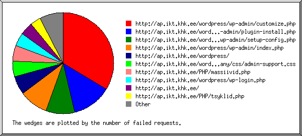
Listing referring URLs, sorted by the number of failed requests.
(Go To: Top | General Summary | Monthly Report | Daily Summary | Hourly Summary | Domain Report | Organization Report | Redirected Referrer Report | Failed Referrer Report | Referring Site Report | Browser Report | Browser Summary | Operating System Report | Status Code Report | File Size Report | File Type Report | Directory Report | Request Report)
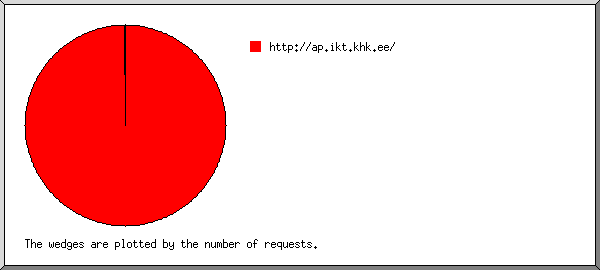
Listing referring sites, sorted by the number of requests.
| #reqs | site |
|---|---|
| 9589 | http://ap.ikt.khk.ee/ |
| 1 | http://www.sexfg.pw/ |
| 1 | http://www.sexybang.top/ |
(Go To: Top | General Summary | Monthly Report | Daily Summary | Hourly Summary | Domain Report | Organization Report | Redirected Referrer Report | Failed Referrer Report | Referring Site Report | Browser Report | Browser Summary | Operating System Report | Status Code Report | File Size Report | File Type Report | Directory Report | Request Report)
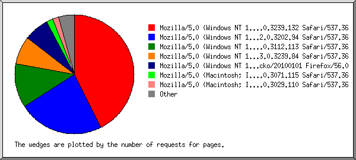
Listing browsers with at least 1 request for a page, sorted by the number of requests for pages.
| #reqs | #pages | browser |
|---|---|---|
| 1087 | 50 | Mozilla/5.0 (Windows NT 10.0; Win64; x64) AppleWebKit/537.36 (KHTML, like Gecko) Chrome/63.0.3239.132 Safari/537.36 |
| 681 | 27 | Mozilla/5.0 (Windows NT 10.0; Win64; x64) AppleWebKit/537.36 (KHTML, like Gecko) Chrome/62.0.3202.94 Safari/537.36 |
| 15 | 14 | Mozilla/5.0 (Windows NT 10.0; Win64; x64) AppleWebKit/537.36 (KHTML, like Gecko) Chrome/60.0.3112.113 Safari/537.36 |
| 8088 | 9 | Mozilla/5.0 (Windows NT 10.0; Win64; x64) AppleWebKit/537.36 (KHTML, like Gecko) Chrome/63.0.3239.84 Safari/537.36 |
| 19 | 8 | Mozilla/5.0 (Windows NT 10.0; WOW64; rv:56.0) Gecko/20100101 Firefox/56.0 |
| 2 | 2 | Mozilla/5.0 (Macintosh; Intel Mac OS X 10_11_6) AppleWebKit/537.36 (KHTML, like Gecko) Chrome/59.0.3071.115 Safari/537.36 |
| 2 | 2 | Mozilla/5.0 (Macintosh; Intel Mac OS X 10_12_4) AppleWebKit/537.36 (KHTML, like Gecko) Chrome/58.0.3029.110 Safari/537.36 |
| 1 | 1 | Mozilla/5.0 (Windows NT 6.1; Win64; x64) AppleWebKit/537.36 (KHTML, like Gecko) Chrome/56.0.2924.87 Safari/537.36 |
| 1 | 1 | Mozilla/5.0 (Windows NT 5.1) AppleWebKit/537.36 (KHTML, like Gecko) Chrome/56.0.2924.87 YaBrowser/17.3.0.1785 Yowser/2.5 Safari/537.36 |
| 1 | 1 | Mozilla/5.0 (compatible; NetcraftSurveyAgent/1.0; +info@netcraft.com) |
| 8 | 1 | WordPress/4.9; http://ap.ikt.khk.ee/wordpress |
| 1 | 1 | Mozilla/5.0 (Windows NT 10.0; WOW64; Trident/7.0; rv:11.0) like Gecko |
| 35 | 0 | [not listed: 3 browsers] |
(Go To: Top | General Summary | Monthly Report | Daily Summary | Hourly Summary | Domain Report | Organization Report | Redirected Referrer Report | Failed Referrer Report | Referring Site Report | Browser Report | Browser Summary | Operating System Report | Status Code Report | File Size Report | File Type Report | Directory Report | Request Report)
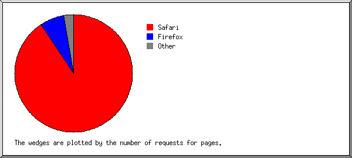
Listing browsers with at least 1 request for a page, sorted by the number of requests for pages.
| # | #reqs | #pages | browser |
|---|---|---|---|
| 1 | 9884 | 106 | Safari |
| 9877 | 106 | Safari/537 | |
| 2 | 19 | 8 | Firefox |
| 19 | 8 | Firefox/56 | |
| 3 | 1 | 1 | Netscape (compatible) |
| 4 | 1 | 1 | Mozilla |
| 5 | 35 | 1 | WordPress |
| 35 | 1 | WordPress/4 | |
| 1 | 0 | [not listed: 1 browser] |
(Go To: Top | General Summary | Monthly Report | Daily Summary | Hourly Summary | Domain Report | Organization Report | Redirected Referrer Report | Failed Referrer Report | Referring Site Report | Browser Report | Browser Summary | Operating System Report | Status Code Report | File Size Report | File Type Report | Directory Report | Request Report)
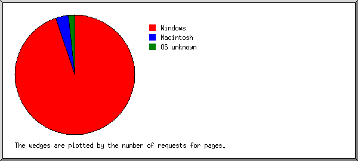
Listing operating systems, sorted by the number of requests for pages.
| # | #reqs | #pages | OS |
|---|---|---|---|
| 1 | 9893 | 111 | Windows |
| 9891 | 109 | Windows NT | |
| 1 | 1 | Windows XP | |
| 1 | 1 | Unknown Windows | |
| 2 | 11 | 4 | Macintosh |
| 3 | 37 | 2 | OS unknown |
(Go To: Top | General Summary | Monthly Report | Daily Summary | Hourly Summary | Domain Report | Organization Report | Redirected Referrer Report | Failed Referrer Report | Referring Site Report | Browser Report | Browser Summary | Operating System Report | Status Code Report | File Size Report | File Type Report | Directory Report | Request Report)
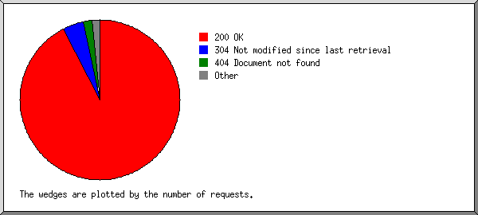
Listing status codes, sorted numerically.
| #reqs | status code |
|---|---|
| 9498 | 200 OK |
| 3 | 301 Document moved permanently |
| 68 | 302 Document found elsewhere |
| 443 | 304 Not modified since last retrieval |
| 178 | 404 Document not found |
| 84 | 500 Internal server error |
(Go To: Top | General Summary | Monthly Report | Daily Summary | Hourly Summary | Domain Report | Organization Report | Redirected Referrer Report | Failed Referrer Report | Referring Site Report | Browser Report | Browser Summary | Operating System Report | Status Code Report | File Size Report | File Type Report | Directory Report | Request Report)
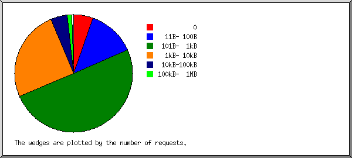
| size | #reqs | %bytes |
|---|---|---|
| 0 | 544 | |
| 1B- 10B | 37 | |
| 11B- 100B | 1296 | 0.03% |
| 101B- 1kB | 4971 | 0.53% |
| 1kB- 10kB | 2510 | 2.07% |
| 10kB-100kB | 459 | 9.04% |
| 100kB- 1MB | 121 | 13.08% |
| 1MB- 10MB | 2 | 5.03% |
| 10MB-100MB | 0 | |
| 100MB- 1GB | 1 | 70.22% |
(Go To: Top | General Summary | Monthly Report | Daily Summary | Hourly Summary | Domain Report | Organization Report | Redirected Referrer Report | Failed Referrer Report | Referring Site Report | Browser Report | Browser Summary | Operating System Report | Status Code Report | File Size Report | File Type Report | Directory Report | Request Report)
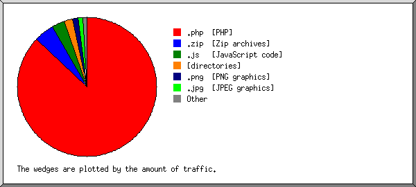
Listing extensions with at least 0.1% of the traffic, sorted by the amount of traffic.
| #reqs | %bytes | extension |
|---|---|---|
| 9080 | 87.11% | .php [PHP] |
| 1 | 4.57% | .zip [Zip archives] |
| 333 | 3.00% | .js [JavaScript code] |
| 113 | 2.02% | [directories] |
| 59 | 1.39% | .png [PNG graphics] |
| 51 | 1.08% | .jpg [JPEG graphics] |
| 265 | 0.75% | .css [Cascading Style Sheets] |
| 39 | 0.09% | [not listed: 7 extensions] |
(Go To: Top | General Summary | Monthly Report | Daily Summary | Hourly Summary | Domain Report | Organization Report | Redirected Referrer Report | Failed Referrer Report | Referring Site Report | Browser Report | Browser Summary | Operating System Report | Status Code Report | File Size Report | File Type Report | Directory Report | Request Report)
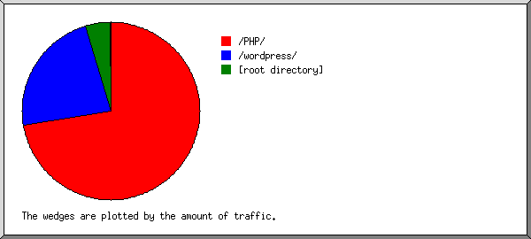
Listing directories with at least 0.01% of the traffic, sorted by the amount of traffic.
| #reqs | %bytes | directory |
|---|---|---|
| 7779 | 72.38% | /PHP/ |
| 2131 | 23.02% | /wordpress/ |
| 11 | 4.57% | [root directory] |
| 5 | 0.01% | /img-sys/ |
| 15 | 0.01% | [not listed: 2 directories] |
(Go To: Top | General Summary | Monthly Report | Daily Summary | Hourly Summary | Domain Report | Organization Report | Redirected Referrer Report | Failed Referrer Report | Referring Site Report | Browser Report | Browser Summary | Operating System Report | Status Code Report | File Size Report | File Type Report | Directory Report | Request Report)
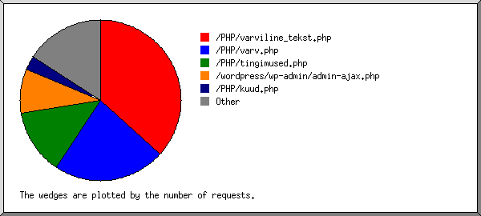
Listing files with at least 20 requests, sorted by the number of requests.
| #reqs | %bytes | last time | file |
|---|---|---|---|
| 3651 | 0.41% | Dec/15/17 11:40 AM | /PHP/varviline_tekst.php |
| 2239 | 1.62% | Dec/15/17 12:13 PM | /PHP/varv.php |
| 1307 | 0.08% | Dec/13/17 10:00 AM | /PHP/tingimused.php |
| 882 | 0.81% | Jan/10/18 11:42 AM | /wordpress/wp-admin/admin-ajax.php |
| 281 | Dec/13/17 9:59 AM | /PHP/kuud.php | |
| 75 | 0.01% | Jan/11/18 9:42 AM | /PHP/sisend.php |
| 57 | 1.55% | Jan/10/18 9:11 AM | /wordpress/wp-admin/load-scripts.php |
| 46 | 0.97% | Jan/10/18 10:24 AM | /wordpress/wp-admin/edit.php |
| 16 | 0.29% | Jan/ 6/18 9:07 PM | /wordpress/wp-admin/edit.php?post_type=page |
| 44 | 0.02% | Jan/11/18 11:38 AM | /PHP/andmebaas.php |
| 36 | 0.01% | Jan/ 9/18 11:44 AM | /PHP/massiivid.php |
| 35 | 0.93% | Jan/10/18 10:29 AM | /wordpress/wp-admin/index.php |
| 35 | 0.84% | Jan/10/18 9:03 AM | /wordpress/ |
| 33 | Jan/10/18 9:07 AM | /wordpress/wp-cron.php | |
| 30 | 1.02% | Jan/10/18 8:47 AM | /wordpress/wp-admin/load-styles.php |
| 30 | 3.20% | Jan/10/18 9:07 AM | /wordpress/wp-admin/post.php |
| 27 | 0.01% | Jan/ 9/18 12:53 PM | /PHP/massiivid2.php |
| 24 | Jan/11/18 9:42 AM | /PHP/salvestus.php | |
| 23 | Jan/11/18 10:00 AM | /PHP/aeg.php | |
| 23 | 0.50% | Jan/ 6/18 9:17 PM | /wordpress/wp-admin/themes.php |
| 1063 | 88.02% | Jan/11/18 9:42 AM | [not listed: 228 files] |